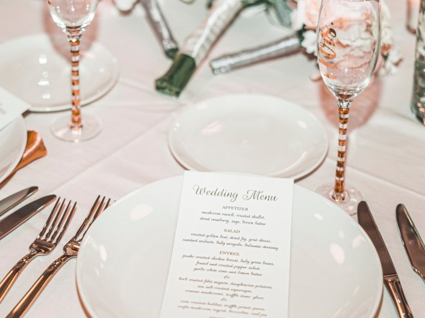

Вот 5 причин, почему стоит заказать услуги организатора свадеб:
1. Вы получите ответы на все вопросы.
Первое, с чем вы столкнетесь, как только задумаетесь о предстоящем празднике, — это тысяча вопросов. Где отмечать? Какой стиль и концепцию выбрать? Какая цветовая гамма подойдет именно вам? Как развлечь гостей? Как все успеть и ничего не упустить? Где искать фотографа? У кого заказать торт и какого размера? Нужно ли репетировать танец с хореографом? Как гости будут добираться до места? Как рассадить гостей? Кто будет следить за тем, чтобы у всех на столах были блюда и напитки, никто не скучал и не чувствовал себя лишним?
Свадебный организатор — тот человек, который ответит вам на каждый вопрос и даст почувствовать, что все под контролем. Какой бы момент ни взволновал вас, вы всегда можете сообщить о нем своему организатору и все прояснить. Многие профессионалы будут готовы ответить вам в любое время дня и ночи, даже в выходные и праздники, так что волноваться вам не придется. Гости останутся довольны и будут благодарны вам за то, что все прошло на высшем уровне.
2. Вы грамотно спланируете бюджет и не переплатите.
Существует мнение, что организовать торжество самостоятельно, без свадебного агентства гораздо дешевле. Это совершенно не так. На то, чтобы без чьей-либо помощи спланировать и реализовать мероприятие высокого уровня, где будет продумана каждая мелочь, вы потратите очень много сил, времени и, как ни удивительно, денег. Ведь свадебный организатор сможет подсказать вам, на чем лучше сэкономить, а на чем экономить нельзя, как правильно распределить бюджет и не выйти за его рамки.
Организуя свадьбу самостоятельно, вы можете не представлять, в какую сумму все в итоге выльется. В случае с организатором вы сразу озвучите свой бюджет, а профессионалы уже предложат варианты исполнения, которые в него вписываются.
3. Вы быстрее найдете подрядчиков.
Конечно, можно провести не один десяток часов в Инстаграмм в поисках профилей фотографов, визажистов, флористов и кондитеров. А потом еще несколько часов — договариваясь с ними о встрече, встречаясь и выбирая. И хорошо, если все они окажутся честными людьми, никто вас не разочарует, не подведет и не пропадет в последний момент.
Свадебное агентство работает с узким кругом проверенных подрядчиков, поэтому вам сразу предложат выбрать из небольшого списка настоящих профессионалов.
4. Вы избавите себя от хлопот и потратите меньше времени.
Самостоятельная подготовка к свадьбе — это недели поиска в интернете, часы телефонных разговоров, бессонные ночи и потраченные нервы. Вы точно хотите испытать это на себе? Или все же мечтаете наслаждаться ожиданием свадебного дня и получать от процесса подготовки исключительно положительные эмоции?
Если вы обратитесь в свадебное агентство, большую часть задач будут выполнять профессионалы, а вам останется лишь рассказывать о своих пожеланиях, выбирать, что и кто вам больше нравится, смотреть лучшие площадки, встречаться с уже утвержденными подрядчиками и наслаждаться результатами работы специалистов. И, разумеется, получать удовольствие от трепетного ожидания! А сам день свадьбы станет для вас праздником, а не рабочим днем, ведь вам не придется следить за всеми и за всем — это будут делать другие люди.
5. Вы минимизируете риски и избежите ошибок.
Организуя свадьбу своими силами, вы рискуете совершить ошибки. Вы можете забыть о чем-то, что-то не учесть, связаться с недобросовестными подрядчиками. Организация торжества — это большая ответственность, и в этом случае вся она будет лежать на вас. Если кто-то из гостей не сможет без проблем добраться до места церемонии, декор зала не будет готов к назначенному часу, фотограф опоздает или друзья-вегетарианцы не найдут в вашем меню ни одного подходящего блюда, вы будете чувствовать свою вину, и это окончательно испортит праздник.
Чтобы избежать распространенных ошибок, снизить риски и не волноваться, обратитесь к свадебному агенту. Мы уверены, что в результате вы сможете сполна насладиться вашим днем, а гости останутся довольны и будут благодарны вам за то, что все прошло на высшем уровне.